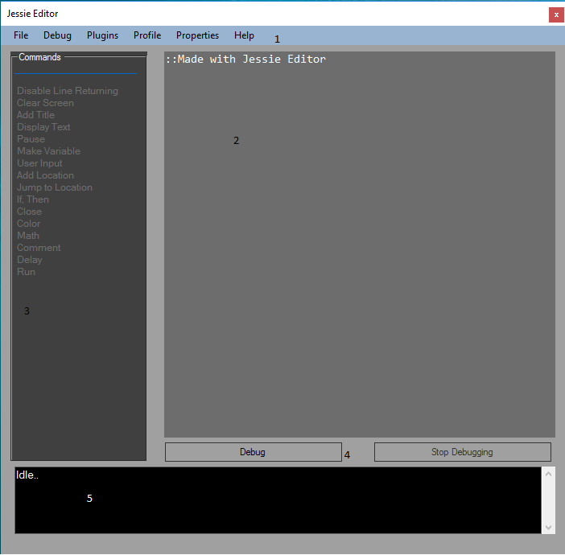

The Jessie Editor
IDE

IDE Parts-
1.Main
menu strip-The menu strip allows you to access commands such as saving,
printing, getting plugins, and managing your points.
2.Main
Code Editor-The main code editor is the area of the editor in which all
your commands and code of your program are placed. You can edit them
from here.
3.Commands-This is the commands sidebar in which you can access commonly used commands or set your own custom commands.
4.Debug and Stop Debugging buttons-These buttons allow you to run your program or for it to stop programming.
5.Output Console-This area of the editor displays any messages that might be important to the user.
back